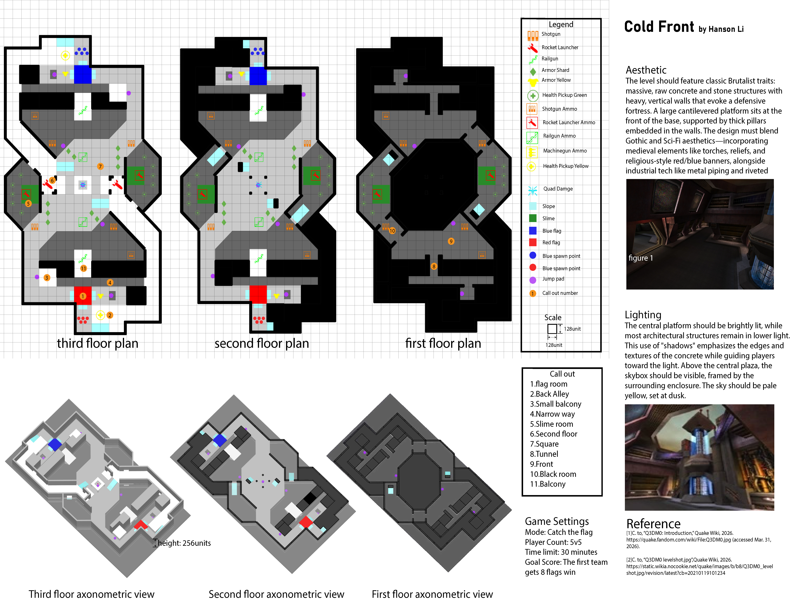
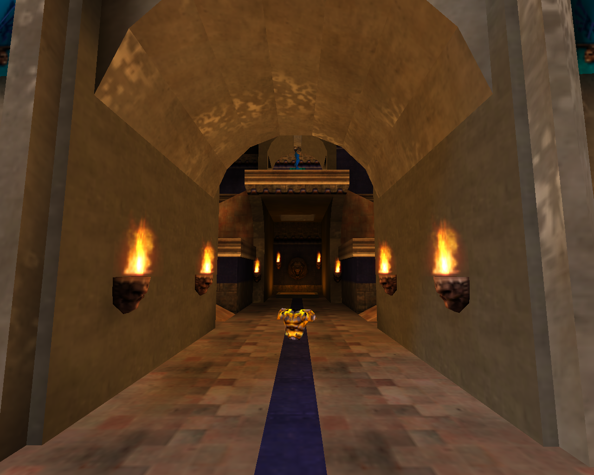
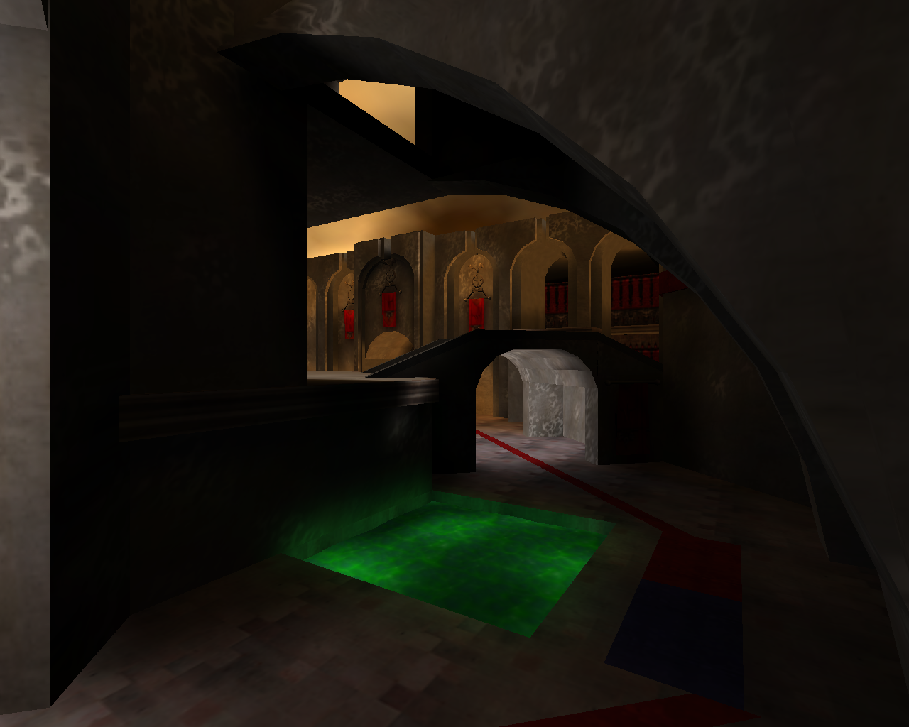
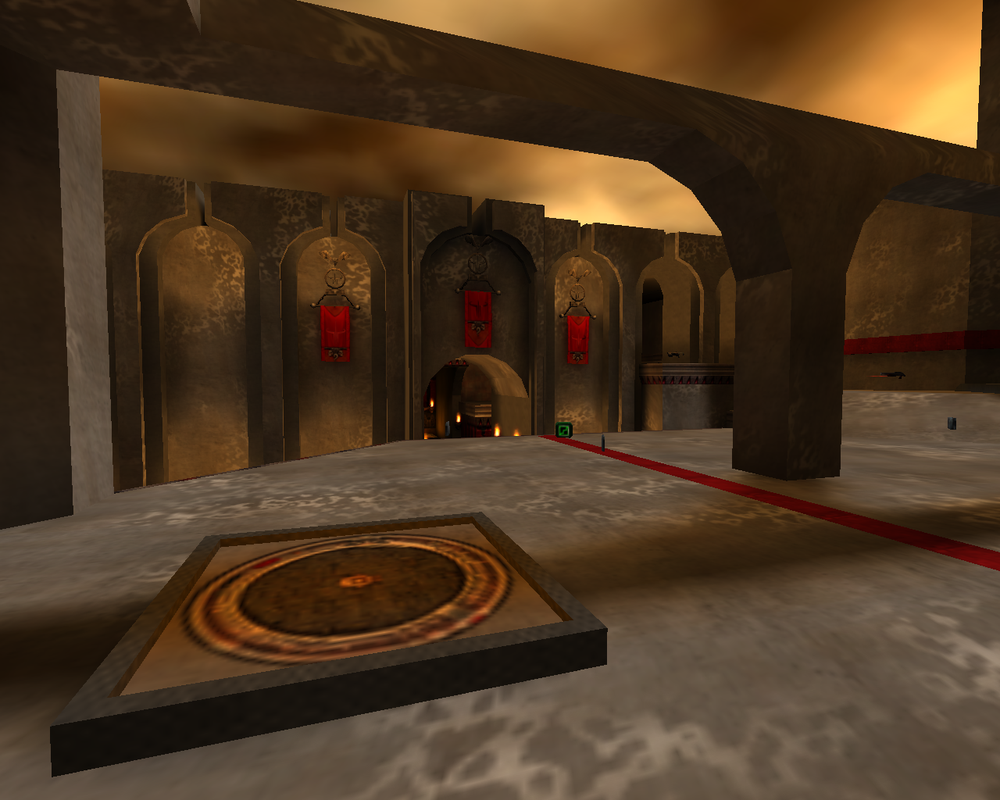
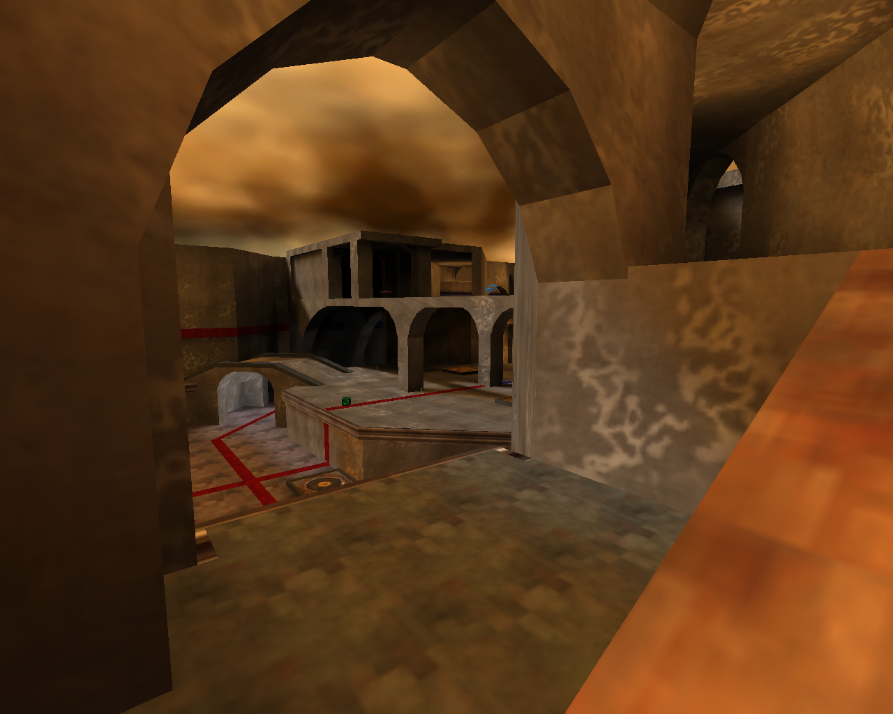
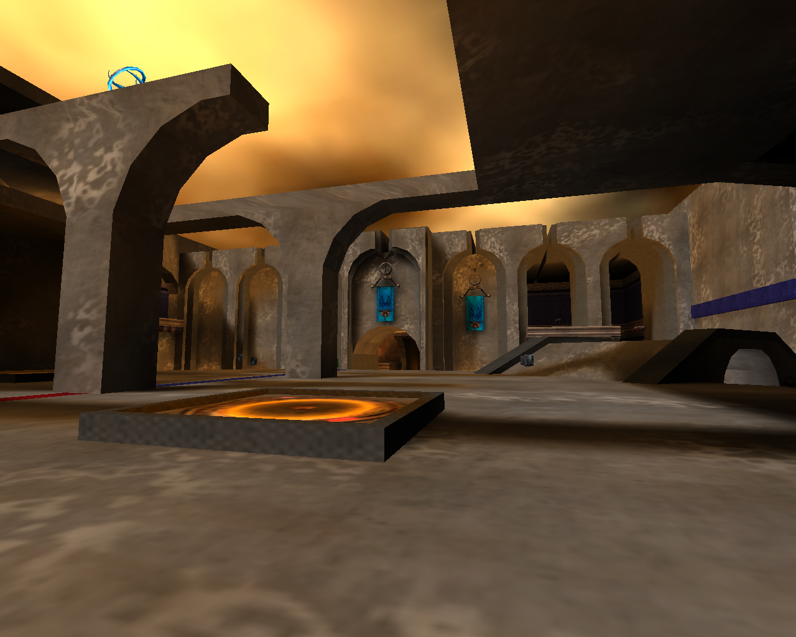
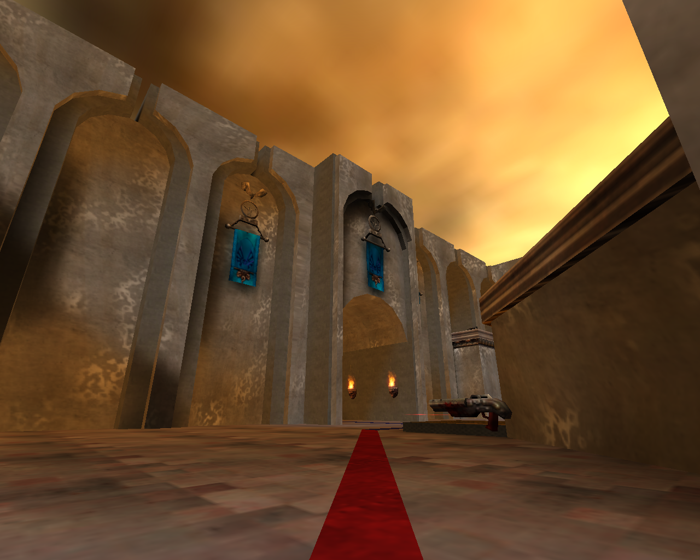

High Ground and Advantage Positions
High ground takes longer to reach. It provides better sightlines and stronger combat positions, but also increases exposure and vulnerability to focus fire or flanking routes.
5v5 Capture the Flag Competitive Multiplayer Map
Project at a Glance
Cold Front is a 5v5 Capture the Flag competitive shooter map. Three continuously interchangeable routes and three vertical combat layers force players to trade among safety, travel time, information, resources, space control, and combat advantage. The goal is not to provide one route that is always superior, but to make every choice carry both a benefit and a cost while preserving counterplay and rotation options after either team gains an advantage.
The map consists of three floors and three primary routes. Players can switch continually among them, while bridges, high ground, tunnels, and the central platform create a connected vertical combat space. Route connections let teams respond quickly to enemy positions, teammate status, and objective pressure without allowing any single path to detach from the overall battle.

High ground takes longer to reach. It provides better sightlines and stronger combat positions, but also increases exposure and vulnerability to focus fire or flanking routes.
Players reach the center quickly, but collect fewer resources and gain a weaker positional advantage along the way. In exchange, the central area provides more battlefield information and faster access to the other two routes.
This longer route is comparatively safe, but delays support for teammates and provides less information. During the rotation, the player gives up most positional advantage and space control.
The level uses massive Brutalist concrete and stone structures, tall walls, cantilevered platforms, and heavy embedded columns to evoke a fortress. Gothic and science-fiction elements combine with torches, reliefs, red and blue team banners, metal piping, and riveted surfaces to place medieval imagery beside industrial technology.
The central platform remains brightly lit while most architecture stays in lower light. Shadows emphasize concrete edges and material texture while drawing attention toward brighter areas. Above the plaza, enclosed architecture frames a pale yellow dusk sky that helps players identify the center.











